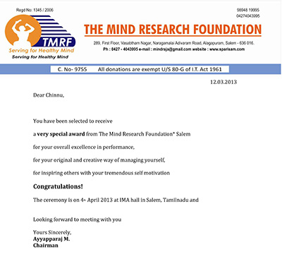

Dear Chinnu,
You have been selected to receive a very special award from The Mind Research Foundation* Salem for your overall excellence in performance, for your original and creative way of managing yourself, for inspiring others with your tremendous self motivation
Congratulations!
The ceremony is on 4 th April 2013 at IMA hall in Salem, Tamilnadu and
Looking forward to meeting with you
Yours Sincerely,
Ayyapparaj M.
Chairman
Chairman, MAN Trust
To,
Mrs.Swarnalatha Mishra
Bhubaneshwar.
Dear parents
Warm greetings from *The Mind Research Foundation, Salem.
TMRF is a non govt organization, started by a Consultant Psychologist with the motto of “serving for healthy minds” and working for the enhancement of the quality of life of differently abled people. TMRF works with children as well as their parents.
To achieve our ultimate objective of inclusion of our children in the society along with other children, we simultaneously work towards creating awareness, understanding and acceptance of Autism.
This year we have INSTITUTED A SPECIAL AWARD
For children with autism who are an inspiration to others , managing their difficulties with perseverance ,insight and cheer even as they are performing well in school and, on recommendation from the TMRF's Awards Committee, I am honored and delighted to confirm that your son Mas.Gowtham Panda(Chinnu) has been selected to receive the “Dr.Leo Kanner award 2013 – Young master ”.
The award consists of a trophy. We would like to present this award to your son during the “Autism 2013”,function on 4 th April 2013 at IMA hall in Salem, Tamilnadu. We invite you to be with him at the special moment
To allow staff enough time to make all necessary arrangements, please respond at
your earliest convenience.
Dear Parent, on behalf of The Mind Research Foundation, we extend our sincere appreciation for enabling your son's abilities
Yours Sincerely,
Ayyapparaj M.
Chairman